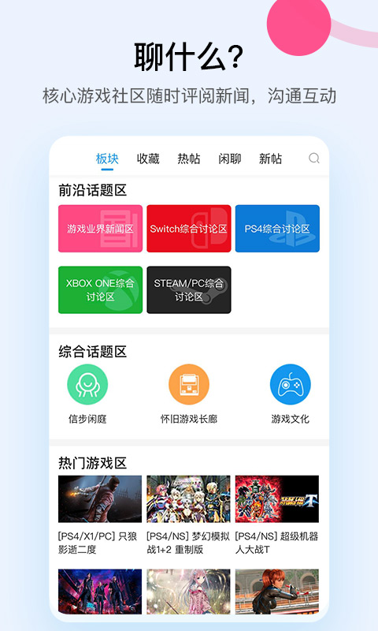

A9VG 电玩部落用了大半年，踩了这五个坑才搞明白
A9VG 作为国内老牌电玩社区，资料库全、Steam 集成方便，但几个不显眼的功能细节很容易踩坑——成就同步延迟、老游戏资料分散、服务型游戏攻略过时，还有发帖红线。
开头：看着简单其实有坑
A9VG 电玩部落官网出品的 APP，界面干净、资料库全、Steam 集成方便，我一开始从下载拿到安装包的时候以为"这不就是个看攻略查秘籍的地方"。结果用了大半年，先后踩了好几个坑：有的让我以为自己 Steam 成就没解锁，有的让我找隐藏 Boss 找了三小时白忙活，还有一次差点因为发帖内容被删。写这篇就是把这些亲历的坑整理出来，免得后面的朋友再踩一遍。

坑一：Steam 成就"没了"——其实是还没同步
症状：前阵子我在 Steam 里刷《黑神话》成就，熬夜把某个难搞的金成就解了，金闪闪跳出来那一刻特别激动，立刻切到 A9VG 个人中心想截图晒给群里的同好看——结果成就列表里根本没显示这个新解锁的。我反复退出重新进了好几次，还是没有。当时心里咯噔一下：Steam 那边明明解锁了，A9VG 这边怎么就没了？难道 A9VG 的成就系统挂了？
原因：后来才知道，A9VG 的 Steam 成就同步不是实时的。它是通过 Steam Web API 每天拉取一次数据，大概就是每天固定某个时间点跑一轮。所以你刚解锁的成就，得等到第二天那次拉取之后才能在 A9VG 里看到。我当时是晚上十一点多解锁的，刚好错过当天的同步时间，得等第二天。
解法：这个坑其实很容易避开——你就记住一条：A9VG 的 Steam 数据永远有至少一天的延迟。想即时晒成就直接用 Steam 客户端截图就行，别等 A9VG。另外还有个附带的隐私坑我也是后来才注意到：绑定 Steam 的默认设置是全部公开，论坛发帖时个人信息栏会显示你拥有的全部 Steam 游戏。要是有什么私密游戏不想让别人看到，记得去「个人中心 → Steam 绑定 → 隐私设置」里改成「只公开最近游玩」或者「完全隐藏」。我当时就是默认设置用了大半年，后来才发现自己游戏库全暴露了。
坑二：老游戏隐藏攻略"找不到"——其实散在老帖里
症状：上个月突然心血来潮想重玩 PS2 时代的《战神2》，听说有个隐藏的奥林匹斯竞技场解锁条件挺复杂的，想在 a9vg文档 的资料库找攻略。我进了战神系列的资料库条目，从置顶帖翻到中间，搜了"竞技场"、"隐藏关卡"、"奥林匹斯"好几个关键词，翻了十来页帖子愣是没找到。最后差点去百度搜了。
原因：A9VG 的资料库条目虽然号称"全"，但主要是靠玩家自发整理、版主补充。部分老游戏的隐藏要素资料分散在论坛多年前的老帖里，资料库条目并没有完全整合进去。尤其是 PS2 以前的老游戏，那时候很多玩家还没养成"整理进资料库"的习惯，攻略全在一个个单独的讨论帖里。
解法：别只盯着资料库条目看。资料库只是入口，真要找老东西得用论坛搜索——试试换不同的关键词，比如"战神2 竞技场 条件"比只搜"奥林匹斯"好使；或者去对应游戏专区的精华帖里挖，版主有时候会把零散的隐藏攻略汇总在精华区里。实在找不到直接发帖问，A9VG 老玩家多，几小时内基本会有人回，靠谱的答案版主还会补进资料库。
坑三：按攻略走却触发不了真结局——游戏版本变了
症状：我之前玩《原神》某版本的隐藏支线，按 A9VG 上一篇写得特别详细的攻略一步步走，什么时间点触发、跟谁对话、顺序不能错，都老老实实照做了。结果最后还是触发了普通剧情，真结局没出来。那篇攻略的评论区也有好几个人说"按攻略走也没出"，但没人给出新解法。
原因：这是服务型游戏的通病——隐藏内容会随版本更新变化，旧版攻略写的触发条件到了新版本可能就失效了。米哈游、网易这些运营型游戏，更新频率快，隐藏彩蛋的触发条件也在悄悄调整，但资料库的攻略不一定有人同步更新。你看到的那篇攻略可能是一年前的，中间游戏版本改了三四次，触发逻辑早就变了。
解法：找资料的时候多看一眼条目标注的更新日期。如果是三个月以前的，尤其是服务型游戏的隐藏要素攻略，打个问号。另外在论坛搜一下有没有玩家最近反馈"攻略过期了"、"版本更新后条件变了"之类的讨论——A9VG 的社区活跃，有人踩过坑通常会发帖提醒。实在不行发个新帖说清楚你当前的游戏版本，大家会帮你验证。
坑四：发帖被删——这些红线别碰
症状：我见过有个玩家在《怪物猎人》专区发了个帖子，说是"分享一个能改装备外观的小工具"，还附了下载链接。帖子发出去不到半小时就被删了，楼主也被封号三天。楼主在群里喊冤："我就是分享个 MOD，又不是作弊，至于吗？"
原因：A9VG 有几条红线是碰都不能碰的——民间修改器、盗版资源、破解工具，哪怕你觉得是"帮玩家省事"、"只是改外观不是作弊"，只要涉及这些内容，会被直接删帖封号。那条被删的帖子里虽然说是"改外观"，但 A9VG 统一归为修改器范畴处理，不管你改的是什么都不给过。
解法：分享什么没问题？你自己的通关经历、隐藏要素发现、装备搭配心得、操作技巧，这些都欢迎——A9VG 本来就是玩家社区。但涉及破解、修改、绕过付费的任何工具或资源，哪怕是贴个下载链接、提个名字，都别碰。有人问起就说"这个不好找，你去 Steam 创意工坊看看有没有类似的"，安全得多。
防坑清单（速查版）
总结一下，以后再用 A9VG 遇到拿不准的地方，快速过一遍这几条：
- 查 Steam 成就有延迟，刚解锁的等明天再看，想晒图直接用 Steam 客户端
- 老游戏隐藏攻略别只看资料库条目，去论坛搜索和精华帖里挖
- 服务型游戏的攻略看更新日期，三个月以前的打个问号，搜搜有没有版本变更的讨论
- 发帖红线别碰：修改器、盗版、破解相关的一律不要发，哪怕是好心分享
- Steam 隐私设置默认全公开，去个人中心改成你舒服的公开程度
最后
知道这些坑之后，A9VG 其实相当省心——资料库的质量在国内游戏社区里算靠前的，Steam 集成用起来也顺手，社区氛围比起很多论坛也算干净。我自己整理的 A9VG 资料库存档分别放在GitHub、Gitee 和 GitCode，国内访问选后两个更稳。踩坑不可怕，踩完知道下次怎么绕开就行。